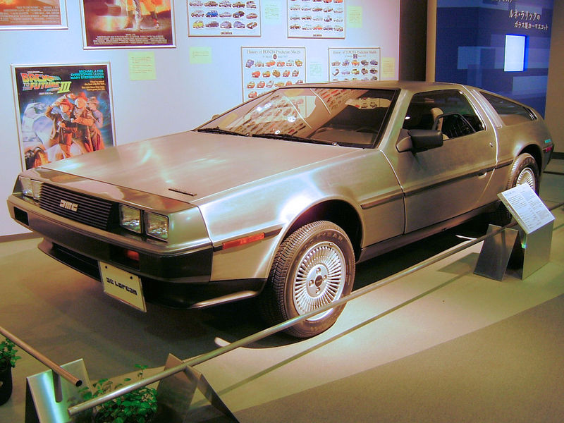
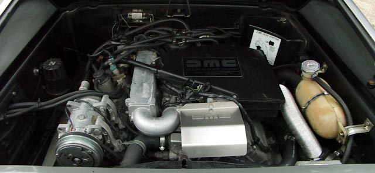

El DeLorean DMC-12 es un automóvil deportivo fabricado por DeLorean Motor Company (DMC) entre 1981 y 1982. Es conocido como el DeLorean, ya que éste fue el único modelo que fabricó dicha compañía. El DMC-12 se caracteriza por sus puertas de ala de gaviota y su carrocería metálica de acero inoxidable sin pintura. Es muy conocido por su aparición en la trilogía de películas de Back to the Future. Después de aparecer en estas tres películas, el DMC-12 se convirtió en un objeto de culto.
El primer prototipo apareció en octubre de 1976 y la producción empezó oficialmente en 1981 en la fábrica que DMC tenía en Dunmurry, en Irlanda del Norte. Durante su producción se cambiaron varios aspectos del automóvil, como el estilo del capó, las ruedas y el interior.

A pesar de haber sido producidos en Irlanda del Norte, los DMC-12 estaban dirigidos, ante todo, para el mercado estadounidense. Por eso, todos los modelos producidos tenían el puesto de conducción a la izquierda (diseñados para ser conducidos por la parte derecha de la carretera). Algunos de ellos fueron convertidos para conducir desde el asiento derecho por mecánicos especialistas del Reino Unido, pero nunca fueron producidos así por DMC, así que la popularidad de este modelo en el Reino Unido fue muy limitada. Al menos 8.500 DMC-12 fueron fabricados antes de que la producción finalizase en 1982. En 2007 se estimaba que aún existían 6500 de ellos.
En octubre de 1976 se completó el primer prototipo del DMC-12, diseñado por William T. Collins, ingeniero jefe y diseñador (que anteriormente era el ingeniero jefe de Pontiac). Originalmente, el motor trasero del DMC-12 iba a ser un motor Wankel de Citroën, pero fue reemplazado por un diseño francés denominado PRV, un motor V6 de inyección que mejoraba la escasa eficiencia del motor Wankel, lo cual era un aspecto importante debido a la escasez de combustibles que estaba sufriendo el mundo entero a raíz de la crisis del petróleo de 1973. William Collins y John DeLorean imaginaron un chasis producido con una tecnología nueva que nunca había sido probada denominada Elastic Reservoir Moulding (ERM), que podría haber contribuido a reducir el peso del automóvil y por tanto se supone que también habría reducido los costes de producción, pero esta tecnología de la que DeLorean había comprado los derechos de la patente no resultó ser adecuada para la producción en masa.
El DMC-12 se construyó finalmente en la fábrica de Dunmurry, Irlanda del Norte, a unos pocos kilómetros del centro de Belfast. La construcción de la fábrica empezó en octubre de 1978 y aunque el comienzo de la producción del DMC-12 fue planificado para 1979, cuestiones de ingeniería y el exceso presupuestario retrasaron el comienzo de la producción hasta 1981. Durante ese tiempo, la tasa de desempleo era muy alta en Irlanda del Norte y los residentes hacían cola para pedir empleo en la fábrica. La mano de obra estaba compuesta por protestantes y católicos que estaban contentos de apartar sus diferencias religiosas para trabajar en equipo. Casi todo el personal de producción no tenía experiencia pero fueron pagados con primas, lo que proporcionó un equipo muy bueno. La mayoría de los aspectos de calidad fueron resueltos en 1982 y los coches se vendieron con una garantía de 12 meses y un contrato de servicio disponible de 5 años y 80.000 km (50.000 millas).
La DeLorean Motor Company se declaró en quiebra a finales de 1982 tras el arresto de John DeLorean en octubre de ese año por cargos de tráfico de drogas. Más tarde descubrieron que no era culpable, pero era demasiado tarde para el DMC-12. Aproximadamente 100 unidades parcialmente ensambladas fueron completadas por Consolidated International (ahora conocida como Big Lots). Las piezas que quedaron de serie en la fábrica, las piezas del US Warranty Parts Center, así como las piezas de los proveedores originales que todavía no las habían repartido a la fábrica fueron todas enviadas a Columbus (Ohio, Estados Unidos) en 1983-1984. Una compañía llamada KAPAC vendió estas piezas a los clientes al por menor y al por mayor mediante pedidos por correo. En 1997, la DeLorean Motor Company de Texas adquirió este inventario.4 Entre enero de 1981 y diciembre de 1982 se fabricaron un total de 9.200 DMC-12 entre la DeLorean Motor Company y Consolidated International,5 aunque algunas fuentes indican que en total sólo se construyeron 8.583.67 Una quinta parte de los DMC-12 fue producida en octubre de 1981.8 Entre febrero y mayo de 1982 fueron producidas alrededor de 1000 unidades ya que se produjo un decaimiento en la producción, fabricándose muy pocos vehículos, todos ellos con el VIN (Vehicle Identification Number) modificado después de la compra realizada por Consolidated International para hacerlos aparecer como modelos de 1983. Estos son los VIN 15XXX, 16XXX, y 17XXX que originariamente eran los VIN 10XXX, 11XXX y 12XXX. El último DMC-12 fue ensamblado el 24 de diciembre de 1982
Una de las barras de torsión usadas en las puertas del DMC-12. La carrocería del DMC-12 fue diseñada por el diseñador de Italdesign Giorgetto Giugiaro,910 y tiene unos paneles construidos en acero inoxidable SS304.11 Exceptuando a tres automóviles para una serie especial con carrocería chapada en oro, todos los DMC-12 que salieron de la fábrica no estaban cubiertos por pintura u otros revestimientos.11 De hecho existen DeLorean pintados, aunque éstos fueron pintados después de que fuesen adquiridos en la fábrica. Varios cientos de unidades fueron producidas sin paneles de acero inoxidable para formar a los trabajadores, las cuales nunca fueron comercializadas.5 Estos DMC-12 eran conocidos como «black cars» (coches negros), apodo que era en referencia a sus paneles negros hechos de fibra de vidrio.5 El DeLorean apareció como un automóvil de lujo, pero de eficaz mantenimiento: según parece, los pequeños arañazos en las superficies de los paneles de acero inoxidable pueden ser eliminados con un estropajo no metálico.12 Los paneles de acero inoxidable fueron fijados a una estructura monocasco de plástico reforzado con fibra de vidrio, que a su vez se fija a un chasis con forma de doble "Y" derivado de la plataforma del Lotus Esprit.

La característica más llamativa del DMC-12 eran sus puertas de ala de gaviota. El problema común de sostener el peso de las puertas de ala de gaviota había sido resuelto por otros fabricantes con puertas ligeras en el Mercedes-Benz 300 SL y una bomba de aire en el Bricklin SV-1, aunque estos diseños tuvieran desventajas estructurales o de comodidad. Las puertas del DMC-12 tienen unas barras de torsión que fueron desarrolladas por Grumman Aerospace y construidas en el Reino Unido por Unbrako (una división de SPS Technologies de Jenkintown, Pensilvania, EUA), las cuales fueron instaladas para resistir las tensiones de soporte de las puertas.13 Estas puertas sólo necesitan un mínimo espacio para abrirlas: 27,5 centímetros (11 pulgadas).14 Esto hace que sea relativamente fácil de abrir y cerrar el automóvil en los aparcamientos en comparación con las puertas convencionales. Al igual que las puertas instaladas en el Lamborghini Countach, las puertas del DMC-12 poseen unas pequeñas ventanillas, ya que unas ventanillas del mismo tamaño del vidrio no serían completamente retráctiles dentro de los cortos paneles de cada puerta.
Los bajos y la suspensión del DMC-12 se basan en gran parte en el Lotus Esprit, con suspensión independiente en las cuatro ruedas, muelles helicoidales, y amortiguadores telescópicos. La suspensión delantera es de doble horquilla, y la trasera es una suspensión multibrazo. En sus etapas iniciales de desarrollo, se dice que el automóvil se manejaba muy bien. Sin embargo, en los Estados Unidos las normativas de modificaciones necesarias en la altura de los parachoques y en el sistema de suspensión, tuvieron efectos negativos sobre la capacidad de manejo del automóvil. Muchos propietarios han sustituido o modificado los muelles de la parte delantera para devolver la altura a la especificación del diseño original.
La dirección es de cremallera y piñón, con una desmultiplicación total de 14,9:1, dando 2,65 giros de tope a tope y un diámetro de giro de 10,67 metros (35 pies). Los DMC-12 originalmente fueron producidos equipados con llantas de aleación, en medidas de 14 pulgadas (355 mm) de diámetro por 6 (152 mm) de ancho las de la parte delantera, y 15 pulgadas (380 mm) de diámetro por 8 (203 mm) de ancho las de la parte trasera. Estas llantas calzaban neumáticos radiales Goodyear Eagle GT. Debido a que el motor está montado en la parte trasera del vehículo, su distribución de peso es del 35% delante y del 65% detrás.15 El DMC-12 tiene frenos de disco en las cuatro ruedas, con 254 milímetros de diámetro los discos delanteros y 267 milímetros los discos traseros.
Copyright © 2018 Wikipedia